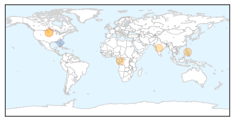
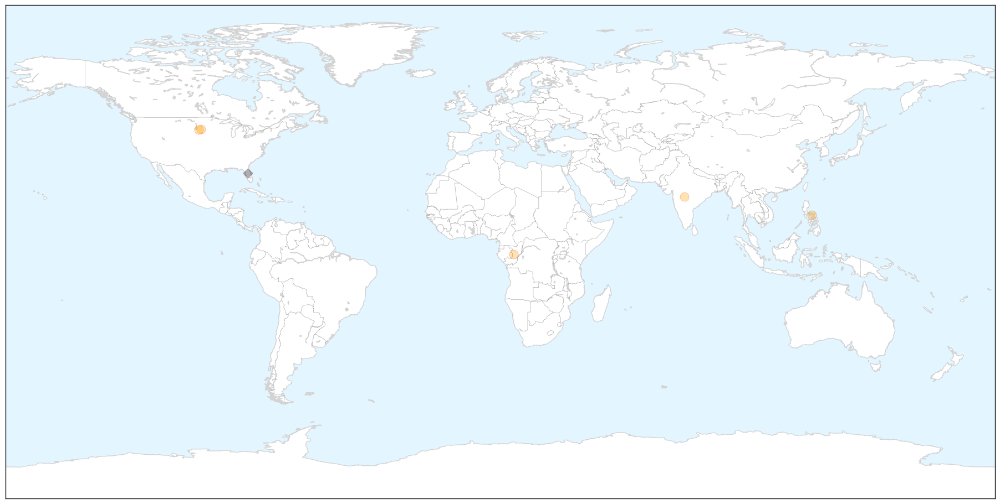
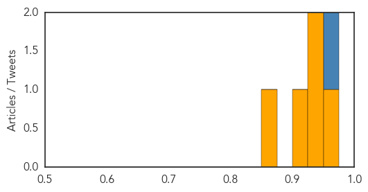
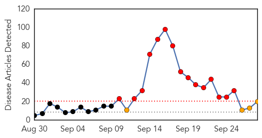
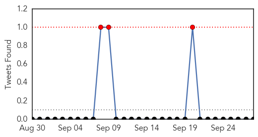
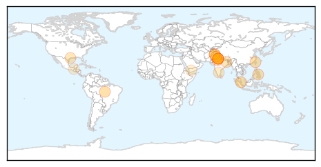
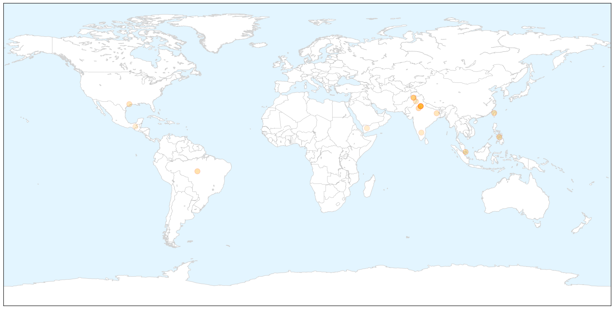

Meningitis
30-Day Web Trend
0 alerts, 0 warnings

30-Day Twitter Trend
1 alerts, 0 warnings

Article Locations

X

Article Confidences
Top Articles:
Top Tweets:
- 0.950
- RT: NEWS SCAN: Ebola update chikungunya cases Nigeria off polio list Iraq cholera outbreak meningitis vaccine trial http://t.co…
Dengue Fever
30-Day Web Trend
15 alerts, 4 warnings

30-Day Twitter Trend
3 alerts, 0 warnings

Article Locations

X

Article Confidences

Top Articles:
- 0.997
- Dengue Fever Hits 39,000 in Viet Nam
- 0.985
- No let up in dengue and H1N1 cases in Bhopal
- 0.982
- Results for potential mosquito-borne virus expected Friday
- 0.976
- Hong Kong officials provide update on dengue fever
- 0.975
- Figure out this dengue math
- 0.972
- Another 152 tested positive during Eid holidays taking tally to 773
- 0.962
- Dengue scare not over, but situation under control: Delhi govt
- 0.944
- Dengue scare not over, but situation under control: Delhi govt
- 0.937
- Tainan dengue cases soar, typhoon poses problem
- 0.918
- All doctors in dengue ward, others suffer : India, News
- 0.905
- DOH deploys dengue express lanes
- 0.898
- Higher than last year’s: Cebu City with most dengue cases in Central Visayas
- 0.889
- Dengue menace: CGHS open for non-beneficiaries too
- 0.859
- Dengue claims its ‘first victim’ in Rawalpindi
- 0.812
- Numbers swell at dengue ward
- 0.787
- Can America cope with a resurgence of tropical disease?
- 0.734
- Dengue surveillance monitored
- 0.643
- 87 cases dengue cases reported in B'luru Urban dist
- 0.562
- Red Cross and Red Crescent relief aid in Yemen
- 0.523
- The U.S. and Mexico: Addressing a shared legacy of neglected tropical diseases and poverty
Top Tweets:
-
No tweets found for Sep 28, 2015